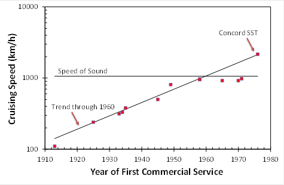

- Home |
- Blog |
- Lithography |
- Published Works |
- For Profit |
- About Chris
- | Gentleman
- | Scientist

by Chris Mack
(First posted on http://life.lithoguru.com, July 26, 2011)
(Data for this essay can be found here: Aircraft_Speed.xlsx)
Analogies with Moore’s Law abound. Virtually any trend looks linear on a log-linear plot if the time period is short enough. Some people hopefully compare their industry’s recent history to Moore’s Law, wishfully predicting future success with the air of inevitability that is usually attached to Moore’s Law. Others look to some past trend in the hopes of understanding the future of Moore’s Law. A common analogy of the latter sort is the trend of airplane speed in the last century.

Plotting the cruising speed of new planes against their first year of commercial use, the trend from the 1910s to the 1950s was linear on a log-scale, just like a Moore’s Law plot. But then something different happens. As airspeed approaches the speed of sound, the trend levels off – a physical limit changed the economics of air travel. The equivalent of Moore’s Law for air travel had ended.
For me, the interesting data point is the Concord Supersonic Transport (SST). First flown commercially in 1976, the Mach 2 jet was perfectly in line with the historical log-speed trend of the first 50 years of the industry. And the SST was a technical success – it did everything that was expected of it. Except, of course, make money. The economic limit had been reached, but that didn’t stop many bright people from insisting that the trend must continue, spending billions to make it so. But technological invention couldn’t change the economic picture, and supersonic transportation never caught on.
So here goes my analogy. I think extreme ultraviolet (EUV) will be the SST of lithography. I have little doubt that the technology can be made to work. If it fails (I hope it won’t, but I think it will), the failure will be economic. Like the SST, EUV lithography will never be economical to operate in a mass (manufacturing) market. We can do it, but that doesn’t mean we should.
Of course, this analogy is imperfect, as all such analogies are. Air travel went through just three doublings of speed in 50 years, as opposed to the 36 doublings of transistor count per chip in the last 50 years of semiconductor manufacturing. And the economics of the industries are hardly the same. Still, the analogy has enough weight to make one think. We’ll know soon enough – EUV lithography will likely succeed or fail in the next two years.
As an aside, the first time I heard someone mention the analogy between airspeed and transistor trends was in the early 1990s, when Richard Freeman of AT&T gave a talk. The subject of his presentation? Soft x-ray lithography, what we now call EUV.
Chris Mack is a writer in Austin, Texas.
© Copyright 2011, Chris Mack.